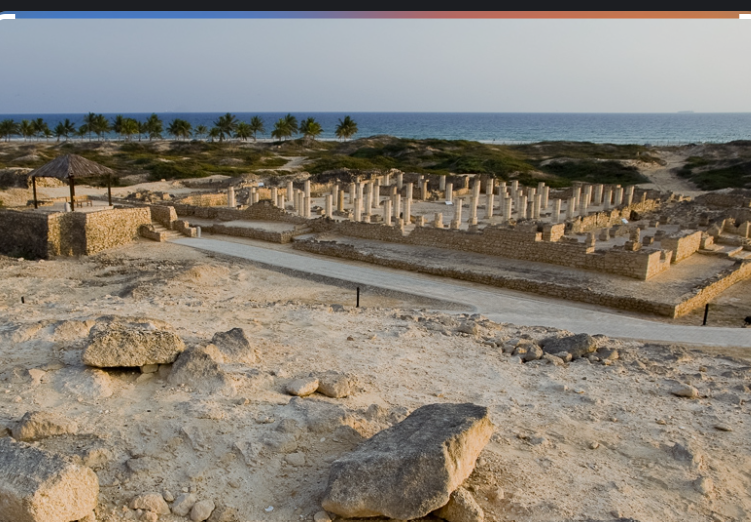
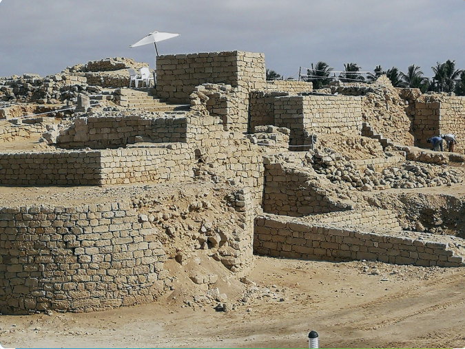
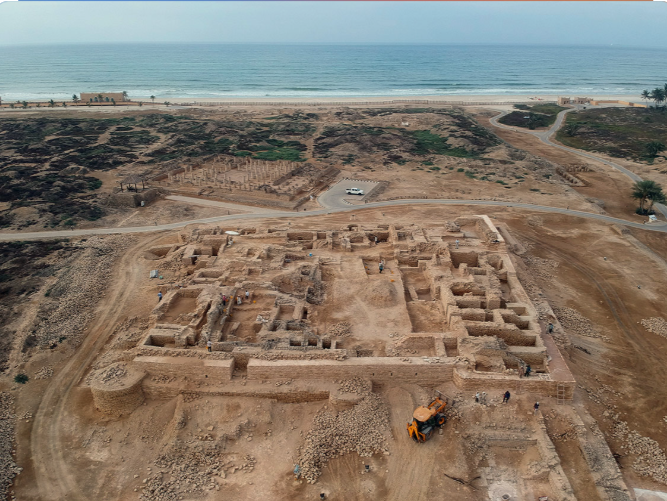
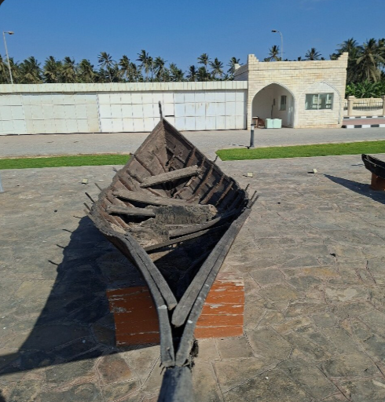
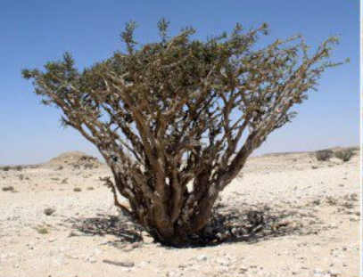
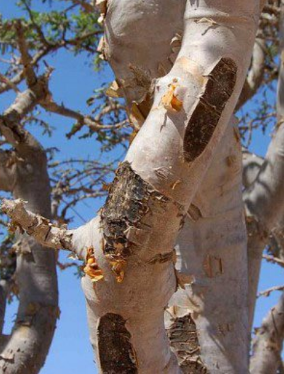
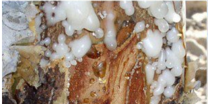
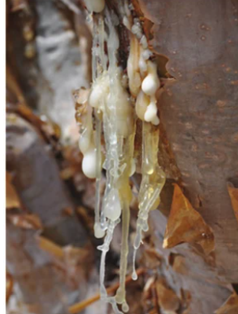
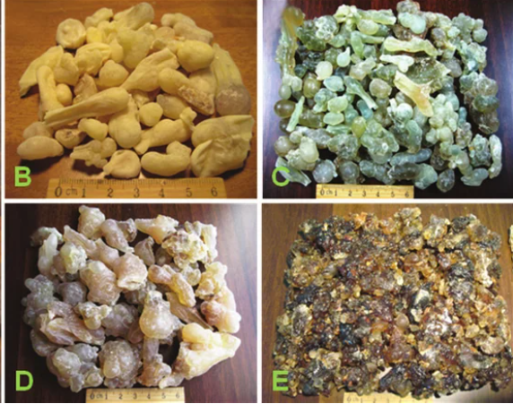

An interactive scientific atlas exploring Boswellia sacra — historical trade routes, archaeological discoveries, chemical biomarkers, paleoclimate proxies, evolutionary genomics, population dynamics, and indigenous Dhofari ethnography.
Evidence labels used throughout: verified checked against the original record · illustrative conceptual graphic or score, not measured data · needs source claim retained but not yet traced to a primary source.
Tap ⛰️ for a tilted 3D perspective · 🌳 zooms to tree level · pinch or scroll to zoom · drag to pan.
Frankincense has been used in southern Arabia since prehistory, but when harvesting and trade began is not firmly established. A date of roughly 6000 BCE is often quoted needs source and should be read as an estimate. The best-documented trade infrastructure in this atlas is later: Sumhuram (Khor Rori) from the 3rd century BCE and Al-Baleed in the medieval period (UNESCO, 2000).
Reliefs at Queen Hatshepsut's temple at Deir el-Bahari (c. 1479–1458 BCE) record an Egyptian expedition to Punt and show incense trees being carried to Egypt in baskets. Where Punt lay is debated (often placed in the Horn of Africa / southern Red Sea region), and the species shown is not certain, so the reliefs should not be read as evidence for Boswellia sacra in Oman.
Prof. Ahmed Al-Harrasi is the Chair of the Natural & Medical Sciences Research Center (NMSRC) and Vice Chancellor for Graduate Studies, Research & External Relations at the University of Nizwa, Oman. He is a leading global authority on the chemistry and extraction of Boswellia sacra frankincense, spearheading research into its bioactive compounds, including boswellic acids and incensole acetate.
Key Contributions: His group has published extensively on the chemistry and bioactivity of Boswellia resins, including the 2022 B. sacra genome (Khan et al., iScience). Titles and roles are as listed by the University of Nizwa and may have changed.
No. The four trade grades are all described as coming from the same species (Boswellia sacra). Differences in colour, chemistry and aroma are linked to where the tree grows (microclimate, altitude, rainfall) and also to harvest timing, tapping practice and how the resin is sorted and graded. Whether genetic differences between Dhofari populations also contribute has not been ruled out open question.
Explore the microclimate, elevation and rainfall gradient across the Dhofar region that is associated with differences in resin grade. Zone locations and the altitude and rainfall ranges below are indicative summaries, not outputs of a single dataset needs source.
A vertically exaggerated sketch of the south-to-north gradient: Arabian Sea → Khareef escarpment → Samhan highlands → Nejd plateau. Heights are illustrative (not a DEM); zone positions follow the map above. Tap a glowing zone to open its grade profile.
Altitude: 800m – 1,500m
Rainfall: < 50 mm/yr (Behind fog belt)
Microclimate: Dry, arid, desert monsoon rain shadow. High diurnal temperature swings.
Terroir Impact: Stress causes low fluid yield, translucent green hue, high α-pinene concentration.
Altitude: 500m – 900m
Rainfall: 30 – 80 mm/yr
Microclimate: Extreme desert heat, zero monsoon fog reach, dry northerly winds.
Terroir Impact: High heat drives high myrcene monoterpenes; amber-pale yellow colouration.
Altitude: 300m – 600m
Rainfall: 50 – 100 mm/yr
Microclimate: Moderate desert transitional zone, warm limestone gravel plains.
Terroir Impact: Higher limonene levels yield bright citrus notes and warm golden tears.
Altitude: 50m – 400m
Rainfall: 150 – 300 mm/yr (Monsoon moisture)
Microclimate: Dense summer fog (Khareef), high ambient humidity, mild temperature.
Terroir Impact: High moisture yields high fluid volume, darker amber colour, deeper woody base notes.
Pale translucent · Samhan mountains · reference grade
Pale yellow · plateau behind Dhofar · high myrcene
Golden yellow · north-west Dhofar · high limonene
Darker amber · everyday / local · deeper woody
| Attribute | Hojari | Najdi | Shathari | Shaabi |
|---|---|---|---|---|
| Resinous / incense | 9 | 8 | 7 | 8 |
| Citrus (lemon/orange) | 6 | 8 | 8 | 4 |
| Minty-turpentine | 7 | 5 | 4 | 3 |
| Woody | 4 | 5 | 6 | 7 |
| Sweet / balsamic | 5 | 6 | 6 | 5 |
| Spicy / herb-like | 3 | 4 | 4 | 4 |
The 0–10 scores are the atlas author’s illustrative summary of how the four grades are described in the trade and in the literature illustrative. They are not published GC-olfactometry or panel measurements. See Al-Harrasi et al. (2019) for the underlying chemistry.
Al-Baleed (ancient Zafar) stands as one of the premier maritime trading hubs of the medieval Islamic world on the Indian Ocean. Prospering between the 8th and 16th centuries CE, the city grew rich from controlling the harvest and seaward export of Dhofar's royal frankincense. Systematic excavations have brought to light four principal architectural structures that defined the civic, military, economic, and maritime heart of the port.

A monumental 8th–10th century sanctuary spanning over 1,732 m². It featured a grand central courtyard and a vast prayer hall supported by 144 octagonal stone columns.

Spanning 3,623 m², this multi-story royal citadel housed the governor and elite garrison, with massive curtain towers protecting secure resin storehouses.

A fortified outer wall reinforced with watchtowers and a deep defensive moat channel connected to the lagoon provided security against inland raids.

Natural sheltered lagoon where traditional Omani dhows (including Sambuk and Ghanja models) loaded frankincense for high-seas trade to China and India.
Founded in the 3rd century BCE by the Hadramaut Kingdom, Sumhuram was built as a fortified coastal outpost to control the collection and maritime export of Dhofari frankincense.
Located right within the Al-Baleed Archaeological Park, the museum features two main exhibition halls highlighting maritime and land trade history:
The traditional harvesters of Dhofar belong primarily to the Shahri (Jibbali) and Mahri tribal lineages. They speak unwritten Modern South Arabian languages—Semitic languages that are distinct from Arabic and not descended from it, with rich local botanical vocabularies.
Indicative only. Local season names and months should be checked against field ethnography (e.g., Miller & Morris, 1988) before reuse.
In Dhofari homes, frankincense resin is burned daily in ornate clay incense burners (Majmar) for purification, welcoming guests, and scenting clothes. Ethnographic records document its medicinal role in chewing for oral hygiene, boiling in hot water for bronchial clarity, and applying oil to soothe joints.
Mass spectrometry can profile the chemistry of Boswellia resins. Incensole and incensole acetate are characteristic diterpenoids (especially abundant in B. papyrifera) and, together with pentacyclic triterpenes such as AKBA (3-O-acetyl-11-keto-β-boswellic acid), are used as chemical markers. How specific each marker is varies by species and sample.
Stable carbon (δ¹³C) and oxygen (δ¹⁸O) isotope ratios in plant tissue respond to water stress: higher δ¹³C can reflect stomatal closure and greater water-use efficiency, and enriched δ¹⁸O can reflect dry air and strong evaporation. This is a well-established approach in other plants. A published, dated Holocene isotope record from Boswellia resin or wood is not cited here, so the chart below is a concept sketch only no B. sacra record cited.
When resin is burned during rituals, thermal degradation creates oxidized compounds such as incensole oxide. Finding heat-altered compounds in ancient censers can provide supporting evidence that incense was burned rather than only stored.
Plate IV is a schematic chromatogram: peak positions and heights are invented for illustration; labels give approximate molecular weights (g/mol).
Invented values to show how two proxies could move together. Not measured data.
Chemical analyses of Egyptian embalming materials have identified many resins, balms and gums. Boswellia / frankincense has been reported in some analyses, but it is documented far less often than conifer and pistacia resins, and how central it was to mummification is still debated cite specific studies.
Residue analysis of the incense altars at the Judahite shrine of Tel Arad reported frankincense with animal fat on the larger altar (Arie, Rosen & Namdar, 2020) re-check citation. Claims about boswellic acids in Roman unguentaria are retained from the earlier draft but need a specific citation needs source.
Recent de novo genome sequencing of Boswellia sacra revealed a 667.8 Mb assembly encoding 18,564 high-confidence protein-encoding genes. The genome retains the signature of the ancient eudicot-wide hexaploidy (about 115–130 million years ago) and shows no further whole-genome duplication in the B. sacra lineage. The authors report a major expansion of Gypsy retroelements within the last ~2 million years (Gypsy elements make up 119.1 Mb). Links from that expansion to stress-response pathways are the authors’ interpretation verified.
Boswellia species differ in chemistry and range, including Boswellia sacra (Arabia/Somaliland), B. frereana (Somaliland), B. serrata (India), and B. papyrifera (Ethiopia). B. sacra resin is rich in pentacyclic triterpenes (boswellic acids), whereas B. frereana resin is chemically distinct (reported to be rich in lupeol-type triterpenes). Ecological explanations for these differences are not cited here needs source.
Recent research has indicated population declines and unsustainable exploitation of multiple Boswellia species, including the Somalian B. sacra populations. However, information on the Arabian populations was previously minimal and contradictory.
The 2025 rapid assessment, covering at least 3,465 km² of the Dhofar mountains, was conducted to predict if the same pattern of population collapse seen in other species is occurring in Oman.
The study observed regeneration across almost all populations, with 97% of transects including at least 10% small trees or saplings. The data do not currently indicate significant or widespread declines in B. sacra in Oman, as seen in other species. Population structures were variable, with both reverse-J shaped (healthy regeneration) and bell-shaped (declining) distributions observed locally.
Despite the overall healthy picture, threats varied geographically and included:
The authors conclude that while the situation is not catastrophic, improved socio-ecological management systems are needed to maintain this status. Key priorities include: research to elucidate drivers of population patterns, improved rangeland management, enhanced monitoring and management of resin tapping, and identification of potential additional reserves.
Source: Johnson, S., Bait Said, A., Vahalík, P., Karas, L., Sarrouf Willson, M., & Bongers, F. (2025). doi:10.1016/j.jaridenv.2025.105368 verified
Johnson et al. (2025) surveyed at least 3,465 km² of the Dhofar mountains and found regeneration in nearly all populations and no evidence of significant or widespread decline. They documented local threats: overgrazing (especially by camels), resin over-harvesting in heavily tapped areas, mining and infrastructure, pests on stressed trees, and wind or flood events. Management of grazing and tapping is recommended. See the Population Impact module. verified
In Eritrea, intensive tapping of B. papyrifera lowered seed quality. At one site, germination was about 90% for untapped trees, 60% for normally tapped trees and 40% for heavily tapped trees; at three annually tapped sites it was 13–16%, versus 80–94% at two untapped sites (Rijkers et al., 2006). These are findings for B. papyrifera. Whether Dhofari B. sacra responds the same way is not shown here. verified
B. sacra is listed Near Threatened (IUCN assessment from 1998, now dated). Draft assessments from 2024, still pending review, rate B. papyrifera and B. frereana as Vulnerable. Endangered ratings apply to some other Boswellia species, mostly Socotran endemics (under review). Source: RBGE review of Boswellia conservation status. verified
Dhofar’s summer monsoon fog (Khareef) shapes local habitats, and changing rainfall could matter for the species. This atlas does not cite a quantified climate effect on B. sacra no source cited.
The Oman assessment recommends better rangeland management, monitoring and management of resin tapping, and additional reserves. Fenced nurseries and tapping rest periods are commonly proposed, but the rest period B. sacra needs is not established in the sources cited here.
Hebrew levonah. Exodus 30:34–38 instructs Moses (Musa in Islamic tradition) to prepare a sacred incense (ketoret) from stacte, onycha, galbanum and pure frankincense, reserved for the Tabernacle. Leviticus 2:1–2 places frankincense on grain offerings. [Ex 30] [1]
Matthew 2:11 says the Magi brought gold, frankincense and myrrh to the child Jesus (‘Isa in Islamic tradition). The familiar readings (gold for kingship, frankincense for divinity or priesthood, myrrh for mortality) come from later Christian interpretation, not from the verse itself. [Mt 2:11] [1]
Frankincense (luban) is not named in the Qur’an. The Qur’an mentions a gift sent by the Queen of Sheba to Sulaiman (Solomon) without naming its contents (27:35). Burning bakhoor is a widespread custom in Muslim households, and classical Islamic medical writing, including Prophetic-medicine texts such as Ibn al-Qayyim’s, discusses frankincense as a remedy cite exact passage [2]
Frankincense — Old French franc encens, meaning “noble incense” or “pure incense.”
Luban (Arabic) / Levonah (Hebrew) — from the ancient Semitic root L-B-N, meaning “milky white,” referring to the fresh milky sap oozing from bark cuts.
(Pliny, Natural History 12.32, 12.65, 12.83; Groom, 1981)
The identity of the earliest traders is not fully known; distinctive flint types have been linked to Dhofar needs source. Later, the Hadrami state of Shabwa (Khor Rori/Sumhuram), indigenous Dhofari communities, Omani Arabs moving north-east from Yemen, and Parthian Persians all participated.
Frankincense and myrrh moved north; spices, textiles and silk arrived by ship from India and China. Shisr, in the desert interior north of Dhofar and often identified with the legendary city of Ubar, may have been a caravan hub.
Frankincense was prized for worship and medicine. Egyptian texts are often cited as calling incense the “sweat of the gods” cite text. Pliny’s own price list puts it well below gold.
How large the earliest trade was is uncertain; the written evidence is much later. Pliny (NH 12.32) describes the route from Thomna, capital of the Gebbanitae, to Gaza as 65 stages with halts for camels (about 1,487 Roman miles).
Caravans reached Shabwa, Marib, Petra and Gaza, with Alexandria as a maritime outlet.
Somalia, Ethiopia, and Oman dominate global supply. Somaliland exports lower grades of B. sacra (“beyo”) to Djibouti, Ethiopia and the Middle East, while higher grades (“meydi”, B. frereana) move to Saudi Arabia, the UAE and Yemen. Production remains labour-intensive and some populations face pressure from over-harvesting. On the IUCN Red List, B. sacra is Near Threatened (1998 assessment); draft assessments rate B. papyrifera and B. frereana Vulnerable. Trade-name details (“beyo”, “meydi”) are retained from the earlier draft needs source.
Each card pairs a traditional use with what research shows. Most clinical studies use Boswellia serrata (Indian frankincense) extracts, not B. sacra resin or incense smoke, so results should not be assumed to transfer. Evidence ratings are the atlas author’s summary of study design and quality, not clinical guidance.
Pastoralist communities are reported to have used resin on animal wounds and in remedies for camels needs ethnographic source.
Dogs: an open-label (uncontrolled) clinical study of B. serrata resin in dogs with joint and spinal disease reported improvement in clinical signs. Controlled evidence is limited. Horses & livestock: Boswellia supplements are marketed for these animals, but controlled efficacy data are limited needs source.
Frankincense resin burned or inhaled for cough, bronchial congestion and asthma. Used in Unani and Ayurvedic practice as a lung tonic.
Boswellic acids inhibit 5-lipoxygenase (5-LOX) in laboratory studies, an enzyme in leukotriene pathways relevant to airway inflammation. Small clinical studies of B. serrata extract in asthma have been reported, but they are limited in size and quality, and the effect on lung function remains unconfirmed.
Resin is traditionally chewed or steeped in water for oral hygiene and gum complaints.
A 2022 three-arm clinical study (60 adults with plaque-induced gingivitis, all given scaling and polishing) compared topical B. serrata gel, chlorhexidine gel and placebo gel over 21 days. Plaque, gingival and bleeding indices improved with both active gels versus placebo, with no significant difference between B. serrata and chlorhexidine. It was a small study of a gel, not a mouthwash, and the abstract does not describe randomization or blinding.
Used for joint pain, rheumatic complaints and inflammatory conditions. Mentioned in classical Unani and Ayurvedic texts for joint stiffness.
A 2020 systematic review and meta-analysis of 7 randomized trials (545 participants) of Boswellia / B. serrata extracts in osteoarthritis found larger reductions in pain (VAS and WOMAC) and better function than control. The authors rated trial quality as generally medium to low, noted high heterogeneity, and advised caution. Proprietary B. serrata extracts such as 5-Loxin® and Aflapin® appear in the literature. AKBA is one of the suspected active constituents.
Incense smoke used in some traditional contexts as a protective and purifying agent; associated with spiritual healing.
In cell-culture studies, AKBA and related boswellic acids induced apoptosis in several cancer cell lines (including glioblastoma, colon and bladder models) and affected NF-κB signalling. These are laboratory findings only. A few small clinical studies have examined brain-tumour oedema during radiotherapy, with inconclusive results. Boswellia is not an established cancer treatment.
Resin applied to wounds, cuts and skin infections; burned to purify air in sickrooms; used as a gargle.
Laboratory studies report antibacterial activity of frankincense oils and extracts, with results varying by species, oil composition and method. A study of B. sacra oil and smoke tested activity against pathogenic and airborne microbes (PubMed 37761150). Some animal studies report improved wound healing; human evidence is lacking.
Boswellia sacra Flueck. is a small, resin-bearing tree native to the Dhofar region of Oman. Below, tilt-enabled image cards illustrate its tree form, papery bark, resin exudation and trade grades. Images are secondary reproductions; confirm permissions and original sources before reuse.

A mature Boswellia sacra tree standing at Wadi Dowkah Natural Park in Dhofar, Oman. The species exhibits a thick trunk and a dense, sprawling canopy adapted to hyper-arid desert conditions.

Close-up view of the smooth, papery, peeling bark of Boswellia sacra. Traditional incisions reveal the underlying cambium where resin ducts release protective oleo-gum-resin upon wounding.


Close-up depiction of milky resin weeping from fresh tree incisions, followed by the hardening phase where droplets form translucent, aromatic frankincense "tears" along the bark.

Two classification schemes appear in the literature. This atlas uses the four regional trade categories (Hojari, Najdi, Shathari, Shaabi). The source figure labels its panels (b)–(e) with a different set of names (“Hougari Royal”, “Superior”, “Regular”, “Sha’bi”), where “Hougari” is a spelling of Hojari. Treat the panels as illustrating grades of resin, not as a one-to-one match with this atlas’s four categories check original caption.
The Boswellia sacra genome assembly spans 667.8 Mb with 18,564 high-confidence protein-coding genes (Khan et al., 2022, iScience 25:104574) verified. The authors report a major expansion of Gypsy retroelements in roughly the last 2 million years; mobile DNA elements of this kind can reshape gene regulation. Claims that terpene-synthase and cytochrome P450 gene families are heavily duplicated, and that this drives resin chemistry, are retained from the earlier draft check against paper.
Terpene synthases (TPS) build the terpene molecules (such as α-pinene, myrcene and limonene) that contribute to resin aroma. Which TPS genes are expanded in B. sacra should be taken from the genome paper needs source.
Drought tolerance is a theme of the genome analysis, but which gene families show signatures of selection should be taken from the paper itself earlier DREB/NAC claim unverified.
Gypsy elements make up about 119.1 Mb of the assembly, and most intact copies were inserted within roughly the last 1.5 million years (Khan et al., 2022). Any link to arid adaptation is the authors’ interpretation verified.
Khan et al. (2017, PLOS ONE) found that the root zone of wild B. sacra is dominated by Ascomycota fungi (about 60%) and has higher Actinobacteria (about 27%), while cultivated trees shift toward Basidiomycota (about 52% in one population) with abundant Proteobacteria and Acidobacteria. The study measured higher glucosidase, cellulase and indole-3-acetic acid (IAA) in the rhizospheres of cultivated trees. What these differences mean for tree health is not established verified.
IAA, a plant growth hormone also made by microbes, was higher in the rhizospheres of cultivated trees than wild ones (Khan et al., 2017).
Glucosidase and cellulase activities, which relate to the breakdown of plant material in soil, were also higher in cultivated rhizospheres (Khan et al., 2017).
Whether adding wild-type microbes could help nursery seedlings is a hypothesis; it has not been tested in the sources cited here.
Al-Mulla (2026) measured the spectral signature of B. sacra in the field (350–2,500 nm), resampled it to WorldView-3 bands, and classified imagery of Wadi Dawkah with the Spectral Angle Mapper (SAM), reaching 93.7% overall accuracy (Kappa 0.87). SAM clearly outperformed NDVI thresholding. Three deep-learning detectors were also tested for finding individual trees; the best (SSD) reached precision 0.83 and recall 0.93 and matched 701 trees in validation, a count of validated detections and not a census. The 93.7% figure belongs to the SAM classification, not to deep learning. verified
Overall accuracy of the SAM classification (user’s accuracy 88.0%, producer’s accuracy 99.2%, Kappa 0.87). It is not the accuracy of the deep-learning detector.
WorldView-3 panchromatic imagery is about 31 cm per pixel (sensor specification), fine enough to see crowns of larger trees. Species discrimination in the study relied on the spectral signature.
The author concludes that field spectroscopy, high-resolution imagery and deep learning together could support monitoring in arid areas. Tree-health classes and repeat-pass change detection are possible future uses, not results reported here.
Making resin and healing wounds costs the tree resources, and its stored carbohydrate reserves (total non-structural carbohydrates, TNC) can be drawn down. In hot, dry air, stomata close and photosynthesis slows, so recovery may be slower. These are general plant-physiology ideas. Measured TNC data for tapped and untapped B. sacra are not cited here, and the chart below is a concept sketch B. sacra TNC data needed. For a related species, intensive tapping reduced seed quality (Rijkers et al., 2006, B. papyrifera) verified.
High vapor pressure deficit (VPD) forces stomatal closure, limiting photosynthesis regardless of soil moisture.
Repeated tapping in hot, dry periods could deplete reserves faster than they are replenished. This is a hypothesis and has not been tested for B. sacra in the sources cited here.
How long B. sacra needs to recover between tapping cycles is not established in the sources cited here. For B. papyrifera, seed quality fell as tapping intensity rose (Rijkers et al., 2006).
Each Boswellia species has a characteristic terpenoid profile. Isoincensole acetate is reported as a marker shared by B. sacra and B. carteri (a name often treated as a synonym of B. sacra), while incensole and incensole acetate are especially abundant in B. papyrifera cite. Chemometric and machine-learning methods applied to GC-MS data are being explored for species and origin identification; accuracy depends on reference libraries and sample type.
Reported shared marker for B. sacra and B. carteri. A marker for the species, not by itself proof of Dhofari origin.
Abundant in B. papyrifera, which helps separate it from Arabian resins in many analyses; mixed or adulterated samples need more than one marker.
Machine-learning classifiers on GC-MS data are an active research area. No accuracy figure is cited here needs source.
Editing DREB and NAC transcription factor genes could enhance stomatal control and water-use efficiency in nursery seedlings before reintroduction to wild habitats.
Synthetic biology could engineer yeast to produce boswellic acids and incensole acetate, reducing pressure on wild trees while supplying pharmaceutical demand.
Marker-assisted selection for heat-tolerant genotypes could future-proof reforestation efforts as monsoon patterns shift under climate change.
Legend: verified checked against the original record while preparing this version · illustrative conceptual graphic · needs source retained but not yet traced to a primary source.